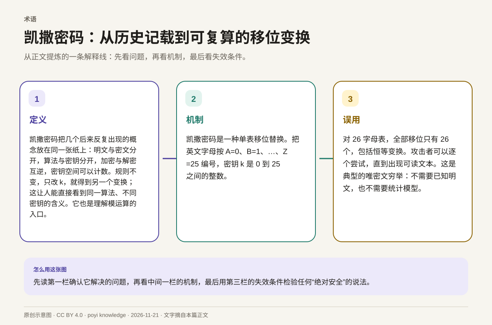

原理与机制
术语：凯撒密码（Caesar Cipher）。凯撒密码是一种单表移位替换。把英文字母按 A=0、B=1、…、Z=25 编号，密钥 k 是 0 到 25 之间的整数。加密把每个明文字母 m 变成
c = (m + k) mod 26，
m = (c − k) mod 26。这里的 mod 表示取 0 到 25 范围内的余数；解密遇到负数时要加 26 调整。k=0 是恒等变换，它仍是这个密钥空间中的一员，但不改变任何字母。除 k=0 外有 25 个非平凡移位。若把凯撒密码限定为历史传说中的 k=3，则只有一种固定变换；现代教材通常把任意固定移位都称为移位密码或凯撒型密码，本文采用后一种称呼并在需要时明确 k。公式只规定字母如何映射，没有规定空格、标点、大小写和数字如何处理。本文的教学实现保留非字母字符不变，并保持原有大小写；这是实现约定，不是数学公式自动推出的结论。换一种预处理，密文会不同。因此讨论凯撒密码的密文时，必须同时说明字母表、密钥和预处理规则。移位是字母表上的一个置换：不同明文字母不会变成同一个密文字母，映射可逆。可逆只保证能解密，不保证保密。26 个密钥都可以穷举，且固定移位保留字母出现次数的整体结构，这两点决定了它的安全边界。

为什么重要
凯撒密码把几个后来反复出现的概念放在同一张纸上：明文与密文分开，算法与密钥分开，加密与解密互逆，密钥空间可以计数。规则不变，只改 k，就得到另一个变换；这让人能直接看到同一算法、不同密钥的含义。它也是理解模运算的入口。字母表是一个长度为 26 的环，Z 之后回到 A；移位不是普通整数加法，越界时要按 26 取余。这个环上的加法群结构后来出现在仿射密码、维吉尼亚密码和更复杂的代数构造中。凯撒密码是仿射密码在乘数 a=1 时的特例。最重要的是，它把可逆与安全拆开。一个变换可以完美可逆，同时只有 26 种可能；攻击者不需要解方程，只需要把 26 种结果都写出来。这个反差是古典密码教学的核心，也是后面频率分析和现代密码安全定义的历史起点。
应用与实例
本文只在教学、字母谜题和历史说明中使用凯撒密码。它适合演示逐字替换、模运算、穷举和频率保持；不适合保护真实消息、口令、文件或通信。古典密码在应用密码学教材中通常作为历史与教学材料出现，而不是现代实用保护方案。一个常见的现代变体是 ROT13：k=13。因为 13+13=26，连续应用两次会回到原文。这个性质使它适合隐藏谜题答案或避免剧透，但不提供任何保密性：任何知道 ROT13 的人都能立即还原。ROT13 的自逆性只是 26 个移位中的一个算术事实，不是安全属性。另一个容易混淆的对象是凯撒方阵一类换位书写。换位改变字母位置，不改变字母身份；移位改变字母身份，不改变位置。两者可以组合，但不是同一个操作。本文的目录目标是 caesar-cipher，不覆盖换位方阵、人物凯撒、战报文物或凯撒密码用于军令这一历史事件条目。历史说明也要限定范围。苏埃托尼乌斯记载凯撒在保密信件中改变字母，并给出以 D 代 A 的解密规则；这支持凯撒使用过某种字母移位的古代叙述，不等于凯撒发明了替换密码，也不等于他的每次通信都使用同一个 k。本文把历史记载与现代 26 字母公式分开陈述。
边界与攻击面
对 26 字母表，全部移位只有 26 个，包括恒等变换。攻击者可以逐个尝试，直到出现可读文本。这是典型的唯密文穷举：不需要已知明文，也不需要统计模型。若明文语言不是英文，字母表大小改变，密钥数也随之改变，但密钥空间很小这一结论通常仍成立。### 频率结构没有消失
固定移位是单表替换，它把每个明文字母固定映成另一个字母，因此密文中各字母的出现次数只是被重新命名。英文中 E、T、A 等字母的高频位置会以另一个字母的形式保留下来。只要文本足够长，频率分析就能提供候选映射；凯撒密码甚至更简单，因为所有候选只差一个整体偏移。### 短文本可能不唯一
穷举会得到 26 个候选，但得到候选不等于唯一识别原文。极短文本可能让多个移位都产生看似合理的片段；单个字母的密文更极端，26 个明文字母都各有对应的 k。只有结合语言模型、上下文或已知明文，才能排除其他候选。本文在示例中明确展示这种歧义，而不是宣称穷举总能自动给出唯一答案。### 没有认证和密钥管理
凯撒密码不提供消息认证、完整性、重放保护或密钥协商。它假设双方事先共享 k，却没有说明如何安全分发、保存或更换密钥。单表移位无论怎样选择 k 都只有 26 种可能，扩大这个密钥空间并不能自动带来现代安全。### 已知明文几乎立即暴露密钥
只要攻击者知道一个明文字母和对应密文字母，就能直接算出 k，再用它解出全文。古典密码的密钥通常只是一次变换的参数，没有现代意义上的长期密钥、随机性和协议上下文。
历史与背景
苏埃托尼乌斯《凯撒传》第 56 节在描述凯撒的私人信件时说，若内容需要保密，他会改变字母顺序，使文字无法直接读出；若要解读，就以字母表中第四个字母，也就是 D，代替 A，其余字母依此类推。按现代 A=0 的编号，这等价于加密时 A→D、B→E，即 k=3 的移位。这个方向容易读反：原文说的是解密时把密文 D 读作明文 A，因此加密方向是 A 变成 D。同一部《十二凯撒传》的奥古斯都传第 88 节记载，奥古斯都在使用密文时以 B 代 A、C 代 B，并用 AA 表示 X。这说明古代作者记录的是具体字母替换惯例，而不是现代统一的 26 字母公式；不同人、不同文本的规则可以不同。《应用密码学手册》第 7 章把移位密码定义为 c_i = m_i + k mod s，并说「According to folklore」（据传说）凯撒使用 k=3。这句「According to folklore」很重要：现代教材把 k=3 当作传统惯例，历史文本本身只描述 D 与 A 的对应，没有给出完整的 26 字母表和所有预处理规则。本文因此同时保留两种陈述：历史记载支持某种移位实践；现代 k=3 是后世整理出的教学约定。古代拉丁字母的书写与今天不完全相同，本文不把现代 A–Z 环直接倒推成凯撒时代的完整字母表。这里的 26 字母公式是用于复算的现代模型；历史解释只到苏埃托尼乌斯文本能够支持的程度。凯撒密码的名称也不证明凯撒发明了替换密码：本文没有把未经核证的更早年代写入正文。
逐步示例与核验
取 k=3，并按本文约定只替换 A–Z、保留空格和大小写：
HELLO→KHOOR；解密KHOOR→HELLO。-VENI VIDI VICI→YHQL YLGL YLFL。-THE QUICK BROWN FOX JUMPS OVER THE LAZY DOG→WKH TXLFN EURZQ IRA MXPSV RYHU WKH ODCB GRJ。以HELLO为例逐字母计算：H=7，7+3=10，对应 K；E=4，4+3=7，对应 H；L=11，11+3=14，对应 O；第二个 L 同样变成 O；O=14，14+3=17，对应 R。解密时把每个结果减 3，负数加 26。再看一个长文本的穷举例子。把一段 600 字母的英文公共领域文本用 k=17 加密，然后对每个候选 k 解密并统计字母串THE的出现次数（不区分词边界）。正确候选 k=17 得到 9 次，其他 25 个候选均为 0 次。这个例子说明：当文本足够长时，简单的字母串线索就能把正确移位从 26 个候选中挑出来；它不说明所有短文本都能这样被唯一确定，也不把子串计数冒充独立单词计数。作为反例，密文WKH在 k=3 时解出THE，但另外 25 个候选也会给出三个字母的字符串。若只看到WKH而没有语言或上下文，算法本身不能决定哪一个才是原文。单个字母的密文更无法区分：26 个候选明文都合法。
参考出处
- Wikipedia search entry for 凯撒密码. https://zh.wikipedia.org/w/index.php?search=%E5%87%AF%E6%92%92%E5%AF%86%E7%A0%81
- RFC 4949: Internet Security Glossary, Version 2. https://www.rfc-editor.org/rfc/rfc4949